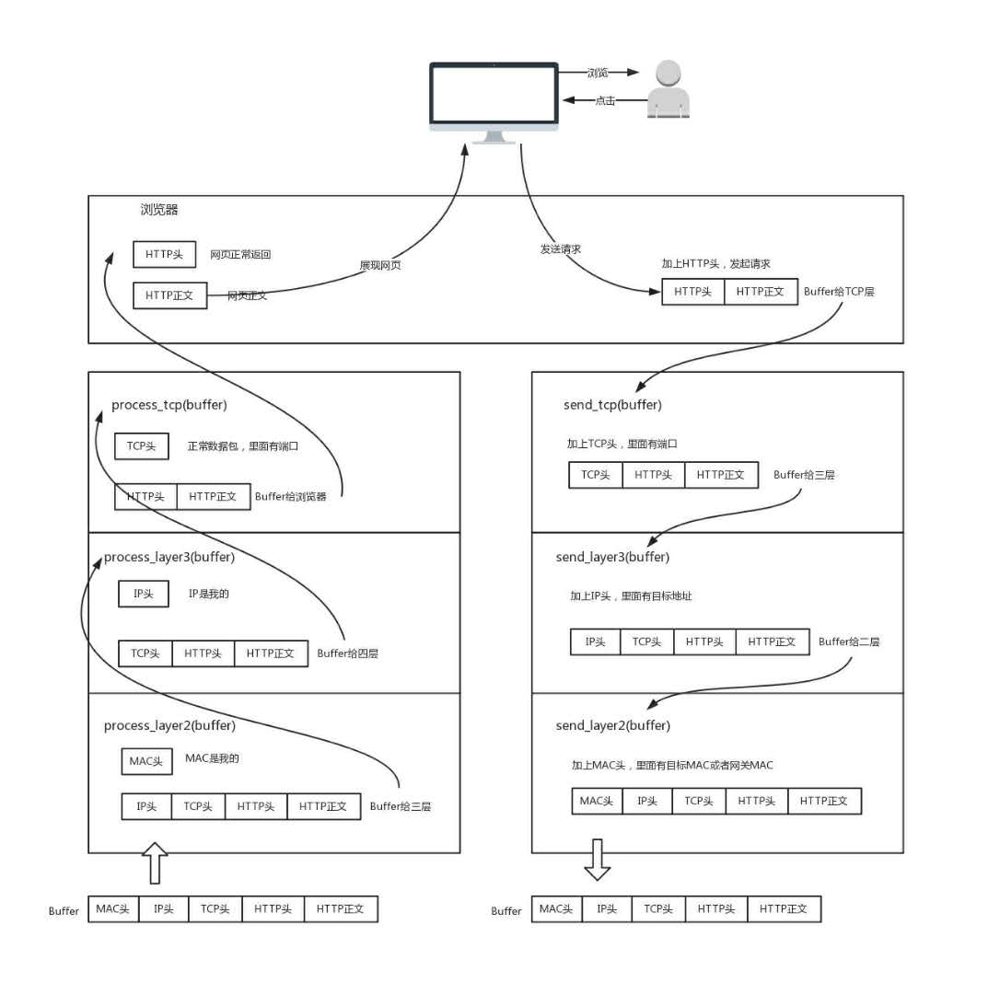

复杂的程序都要分层，这是程序设计的要求。比如，复杂的电商还会分数据库层、缓存层、Compose层、Controller层和接入层，每层专注做本层的事情
只要是在网络上跑的包，都是完整的。可以有下层没上层，绝对不可能有上层没下层。对TCP协议来说，三次握手也好，重试也好，只要想发出去包，就要有IP层和MAC层，不然是发不出去的

所谓二层设备、三层设备，都是这些设备上跑的程序不同而已。一个HTTP协议的包经过一个二层设备，二层设备收进去的是整个网络包。这里面有HTTP、TCP、IP、MAC都有。什么叫二层设备，就是只把MAC头摘下来，看看到底是丢弃、转发，还是自己留着。三层设备，就是把MAC头摘下来之后，再把IP头摘下来，看看到底是丢弃、转发，还是自己留着
IP地址是一个网卡在网络世界的通讯地址， 相当于我们现实世界的门牌号码
CIDR，无类型域间选路，如10.100.122.2/24，24表示32位中，前24位是网络号，后8位是主机号。将子网掩码（255.255.255.0）和IP地址（10.100.122.2）进行AND运算。前面3个255转成二进制都是1，1和任何数值取AND都是原来数值，因而前三个数不变（10.100.122），后面一个是0，转换成二进制是0，0和任何数值AND都是0，，因而最后一个数变为0，合起来就是10.100.122.0，这就是网络号。将子网掩码和IP地址按位计算AND，就可得到网络号
lo全称是loopback，又称环回接口，往往会被分配到127.0.0.1这个地址。这个地址用于本机通信，经过内核处理后直接返回，不会在任何网络。
MAC地址更像是身份证，是一个唯一的标识。它的唯一性设计是为了组网的时候，不同的网卡放在一个网络里面的时候，可以不用担心冲突。从硬件角度，保证不同的网卡有不同的标识
<BROADCAST,MULTICAST,UP,LOWER_UP>，net_device flags，网络设备的状态标识
- 1）UP表示网卡处于启动的状态
- 2）BROADCAST表示这个网卡有广播地址，可以发送广播包
- 3）MULTICAST表示网卡可以发送多播包
- 4）LOWER_UP表示L1是启动的，即网线插着
- 5）MTU1500，最大传输单元MTU为1500，是以太网的默认值
- 6）qdic pfifo_fast，qdisc全称是queueing discipline，排除规则，如果需要通过某个网络接口发送数据包，都需要按照为这个接口配置的qdisc把数据包加入队列
Linux默认的逻辑是，如果这是一个跨网段的调用，它便不会直接将包发送到网络上，而是企图将包发送到网关
DHCP（Dynamic Host Configuration Protocol）动态主机配置协议，如果是数据中心里面的服务器，IP一旦配置好，基本不会变，这就相当于买房自己装修。DHCP的方式就相当于租房。你不用装修，都是帮你配置好的。你暂时用一下，用完退租就可以了。DHCP协议能PXE（预启动执行环境），可以为客户机安装操作系统，在云计算领域很有用
电脑连电脑，水晶头要做交叉，用的是1-3，2-6交叉接法。水晶头的第1、2和第3、6脚，它们分别起着收、发信号的作用。将一端的1号和3号线、2号和6号线互换一下位置，就能够在物理层实现一端发送信号，另一端能收到
数据链路层，也叫MAC层，全称是Medium Access Control，即媒体访问控制。对于以太网，第二层的最开始，就是目标的MAC地址和源的MAC地址。有了目标MAC地址，数据包在链路上广播，MAC的网卡才能发现，这个包是给它的。MAC的网卡把包收进来，然后打开IP包，发现IP地址也是自己的，再打开TCP包，发现端口并由监听该端口的应用进行处理
ARP协议，已知IP地址，求MAC地址的协议。在一个局域网里面，当知道了IP地址，不知道MAC地址怎么办？靠“吼”。广而告之，发送一个广播包，谁是这个IP谁来回答。为了避免每次都用ARP请求，机器本地也会进行ARP缓存
每个机器的IP地址会变，所在的口也会变，因而交换机上的学习的结果，我们称为转发表，是有一个过期时间的
在数据结构中，有一个方法叫作最小生成树。有环的我们常称为图。将图中的环破了，就生成了树。在计算机网络中，生成地的算法叫作STP，全称Spanning Tree Protocol，部分概念：
- 1）Root Bridge，根交换机（根）
- 2）Designated Bridges，指定交换机（树枝）
- 3）Bridge Protocol Data Units（BPDU），网桥协议数据单元。（相互比较实力，只有Root能发）
- 4）Priority Vector，优先级向量（实力值，越小越牛）
ping是基于ICMP协议工作的，ICMP全称Internet Control Message Protocol，互联网控制报文协议：
- 1）ICMP报文是封装在IP包里面。因为传输指令的时候，肯定需要源地址和目标地址。它本身非常简单。
- 2）对ping的主动请求，进行网络抓包，称为ICMP ECHO REQUEST。同理主动请求的回复，称为ICMP ECHO REPLY
ICMP差错报文：
- 1）终点不可达为3：网络不可达代码为0（找不到地方），主机不可达代码为1（找到地方没人），协议不可达代码为2（找到地方有人，口号不对），端口不可达代码为3（找到地方，有人，口号对，事儿不对），需要分片但设置了不分片位代码为4（路线不对，想换车，不允许）
- 2）源抑制为4
- 3）超时为11
- 4）重定向为5
ping的发送和接收过程：

网络包从源地址到目标地址都需要比过的设备或机器，使用tcpdum -i eth0 icmp查看包有没有到达某个点，回复的包到达了哪个点，可以更加容易推断出错的位置。如果ping不通，可以使用telnet来测试网络是否通
Traceroute，使用ICMP的规则，故意制造一些能够产生错误的场景
- 1）第一个作用就是故意设置特殊的TTL，来追踪去往目的地时沿途经过的路由器。Tracerroute的参数指向某个目的IP地址，它会发送一个UDP的数据包。将TTL设置成1，也就说一旦遇到一个路由器或者一个关卡，就表示它“牺牲”了
- 2）Traceroute还有一个作用是故意设置不分片，从而确定路径的MTU。要做的工作首先是发送分组，并设置“不分片”标志。发送的和一个分组的长度正好与出口MTU相等。如果中间遇到窄的关口会被卡住，会发送ICMP网络差包，类型为“需要进行分片但设置不分片位”。其实，这是人家故意的好吧，每次收到ICMP“不能分片”差错时就减小分组的长度，直到到达目标主机
路由器是一台设备，它有五个网口或者网卡，相当于有五只手，分别连着五个局域网。每只手的IP地址都和局域网的IP地址相同的网段，每只手是它握住那个局域网的网关
静态路由，其实就是在路由器上，配置一条一条规则
不改变IP地址的网关，我们称为转发网关；改变IP地址的网关，我们称为NAT网关
所谓的下一跳是，某个IP要将这个IP地址转换为MAC放入MAC头
当一个入口的网络包送到路由器时，它会根据一个本地的转发信息库，来决定如何正确地转发流量。这个转发信息库通常被称为路由表。一张路由表会有多条路由规则。每一条规则至少包含三项信息：
- 1）目的网络：这个包想去哪儿？
- 2）出口设备：将包从哪个口扔出去？
- 3）下一跳网关：下一个路由器的地址
通过route命令和ip route命令都可以进行查询或者配置
策略路由：可以配置多个路由表，可以根据源IP地址、入口设备、TOS等选择路由表，然后在路由表中查找路由。这样可以使得来自不同来源的包走不同的路由
求最短路径路由算法：
- 1）距离矢量路由算法（distance vector routing）。基于Bellman-Ford算法。基本思路是，每个路由都保存一个路由表，包含多行，每行对应网络中的一个路由器，每一行包含两部分信息，一个是要到目标路由器，从那条丝出去，另一个是到目标路由器的距离。由此可以看出，每个路由器都是知道全局信息的。那这个信息如何更新？每个路由器都知道自己和邻居之间的距离，每过几秒，每个路由器都将自己所知的到达所有的路由器的距离告知邻居，每个路由器也能从邻居那里得到相似的信息。坏消息传播慢；每次发送的时候，要发送整个全局路由表
- 2）链路状态路由（link state routing），基于Dijkstra算法。当一个路由器启动的时候，首先是发现邻居，向邻居say hello，邻居都回复。然后计算和邻居的距离，发送一个echo，要求马上返回，除以二就是距离。然后将自己和邻居之间的链路状态包广播出去，发送到整个网络的每个路由器。这样每个路由器都能够收到它和邻居之间的关系的信息。因而，每个路由器都能在本地构建一个完整的图，然后针对这个图使用Dijkstra算法，找到两点之间的最短路径。只广播更新的或改变的网络拓扑，这使得更新信息更小，节省了带宽和CPU利用率。而且一旦一个路由器挂了，它的邻居都会广播这个消息
动态路由协议：
- 1）基于链路状态路由算法的OSPF（开放式最短路径优先），也称内部网关协议（IGP），基于TCP
- 2）基于距离矢量路由算法的BGP，也称外网路由协议，基于UDP
所谓的建立连接，是为了在客户端和服务端维护连接，而建立一定的数据结构来维护双方交互的状态，用这样的数据结构来保证所谓的面向连接特性
UDP继承了IP的特性，基于数据报的，一个一个地发，一个一个地收
我们可以这样比喻，如果MAC层定义了本地局域网的传输行为，IP层定义了整个网络端到端的传输行为，这两层基本定义了这样的基因：网络传输是以包为单位的，二层叫帧，网络层叫包，传输层叫段。我们笼统地称为包。包单独传输，自行选路，在不同的设备封装解封装，不保证到达。基于这个基因，生下来的孩子UDP完全继承了这些特性，几乎没有自己的思想
UDP三大特点：
- 1）沟通简单，不需要大量的数据结构、处理逻辑、包头字段
- 2）轻信他人，不会建立连接，虽然有商品号，但是监听在这个地方，谁都可以传给他数据
- 3）愣头青，做事不懂权变。无论网络状况，该怎么发就怎么发
UDP三大使用场景：
- 1）需要资源少，在网络情况比较好的内网，或者对于丢包不敏感的应用（DHCP、TFTP等）
- 2）不需要一对一沟通，建立连接，而是可以广播的应用。不面向连接的功能可以承载广播或者多播的协议
- 3）需要处理速度快，时延低，可以容忍少数丢包，但是要求即使网络拥塞，也毫不退缩，一往无前的时候
UDP应用领域：
- 1）网页或者APP的访问：QUIC技术
- 2）流媒体协议：RTMP
- 3）实时游戏
- 4）IoT物联网：Thread
- 5）移动通信：GTP-U
掌握TCP重点应该关注：
- 1）顺序问题，稳重不乱
- 2）丢包问题，承诺靠谱
- 3）连接维护，有始有终
- 4）流量控制，把握分寸
- 5）拥塞控制，知进知退
TCP状态时序图：

TCP状态机：

TCP为了保证顺序性，每一个包都有一个ID。在建立连接的时候，会商定起始的ID是什么，然后按照ID一个个发送。为了保证不丢包，对于发送的包都要进行应答，但是这个应答也不是一个一个来的，而是会应答某个之前的ID，表示都收到了，这种模式称为累计确认或者累计应答（cumulative acknowledgment）
TCP的超时策略：超时间隔加倍。每当遇到一次超时重传的时候，都会将下一次超时时间间隔设为先前值的两倍。两次超时，就说明网络环境差，不宜频繁反复发送
在建立Socket的时候，应该设置什么参数呢？Socket编程进行的是端到端的通信，往往意识不到中间经过多少局域网，多少路由器，因而能够设置的参数，也只能是端到端协议之上网络层和传输层的。在网络层，Socket函数需要指定到底是IPv4还是IPv6，分别对应设置为AF_INET和AF_INET6。另外，还有指定到底是TCP还是UDP。TCP协议是基于数据流的，所以设置为SOCK_STREAM，而UDP是基于数据报的，因而设置为SOCK_DGRAM
监听的Socket和传数据的Socket是两个，一个叫作监听Socket，一个叫作已链接Socket
TCP协议的Socket程序函数调用过程：

基于UDP的Socket函数调用过程

服务器如何接更多项目（服务端TCP连接四元组中只有对端IP，也就是客户端的IP和对端的端口，也即客户端的端口是可变的，因此，最大TCP连接数=客户端IP数*客户端端口数，对IPv4，客户端的IP数最多为2的32次方，客户端的端口数最多为2的16次方，也就是服务端单机最大TCP连接数，约为2的48次方。由于文件描述符的限制和内存的限制，连接数远不能达到理论上限）：
- 1）将项目外包给其他公司（多进程方式）
- 2）钭项目转包给独立的项目组（多线程方式）
- 3）一个项目组支撑多个项目（IO多路复用，一个线程维护多个Socket）
- 4）一个项目组支撑多个项目（IO多路复用，从“派人盯着”到“有事通知”）
HTTP请求报文：

在HTTP头里面，Cache-control是用来控制缓存的。当客户端发送的请求中包含max-age指令时，如果判定缓存层中，资源的缓存时间数值比指定时间的数值小，那么客户端就可以接受缓存的资源；当指定max-age值为0，那么缓存层通常需要将请求转发给应用集群。另外，If-Modified-Since也是一个关于缓存的。如果服务器的资源在某个时间之后更新了，那么客户端就应该下载最新的资源；如果没有更新，服务端会返回“304 Not Modified”的响应，那客户端就不用下载了，也会节省带宽
HTTP协议是基于TCP协议的，所以它使用面向连接的方式发送请求，通过stream二进制流的方式传给对方
HTTP1.1的返回报文：

HTTP2.0会对HTTP的头进行一定的压缩，将原来每次都要携带的大量key value在两端建立一个索引表，对相同的头只发送索引表中的索引。另外，HTTP2.0协议将一个TCP的连接中，切分成多个流，每个流都有自己的ID，而且流可以是客户端发往服务端，也可以是服务端发往客户端。它其实只是一个虚拟的通道。注是有优先级的
QUIC的机制：
- 1）自定义连接机制
- 2）自定义重传机制
- 3）无阻塞的多路复用
- 4）自定义流量控制
HTTPS协议的总体思路：公钥私钥主要用于传输对称加密的秘钥，而真正的双方大数据量的通信都是通过对称加密进行的：

视频和图片的压缩过程有什么特点：
- 1）空间冗余：图像相邻像素之间往往是渐变的，不是突变的
- 2）时间冗余：相信图像之间的内容相似
- 3）视觉冗余：人的视觉系统对某些细节不敏感，可以允许丢失一些数据
- 4）编码冗余：不同像素值出现的概率不同，概率高的字节少，概率低的用的字节多
直播过程图：

一个视频，可以拆分成一系列的帧，每一帧拆分成一系列的片，每一片都放在一个NALU里面，NALU之间都是通过特殊的起始标识符分隔，在每一个I帧的第一片前面，要插入单独保存SPS和PPS的NALU，最终形成一个长长的NALU序列
RTMP推流过程：

RTMP拉流过程：

FTP有两种工作模式，分别是主动模式（PORT）和被动模式（PASV），这些都是站在FTP服务器的角度来说：
- 1）主动模式下，客户端随机打开一个大于1024的端口N，向服务器的命令端口21发起连接，同时开放N+1端口监听，并向服务器发出“prot N+1”命令，由服务器从自己的数据端口20，主动连接到客户端指定的数据端口N+1
- 2）被动模式下，当开启一个FTP连接时，客户端打开两个做生意的本地端口N（大于1024）和N+1。第一个端口连接服务器的21端口，提交PASV命令。然后，服务器会开启一个任意的端口P（大于1024），返回“227 entering passive mode”消息，里面有FTP服务器开放的用来进行数据传输的端口。客户端收到消息取得端口号之后，会通过N+1号端口连接服务器端的端口P，然后在两个端口之间进行数据传输
DNS服务器，一定要设置成高可用、高并发和分布式的

- 1）根DNS服务器：返回顶级域DNS服务器的IP地址
- 2）顶级域DNS服务器：返回权威DNS服务器的IP地址
- 3）权威DNS服务器：返回相应主机的IP地址
DNS解析流程：

DNS可以做内部及全局负载均衡：为了保证我们的应用高可用，往往会部署在多个机房，每个地方都会有自己的IP地址。当用户访问某个域名的时候，这个IP地址可以轮询访问多个数据中心。如果一个数据中心因为某种原因挂了，只要在DNS服务器里面，将这个数据中心对应的IP地址删除，就可以实现一定的高可用
DNS访问数据中心中对象存储上的静态资源：

HTTPDNS其实就是，不走传统的DNS解析，而是自己搭建基于HTTP协议的DNS服务器集群，分布在多个地点和多个运营商。当客户端需要DNS解析的时候，直接通过HTTP协议进行请求这个服务器集群，得到就近的地址
CDN分发系统的架构：

动态CDN主要有两种模式：
- 1）边缘计算模式，数据的逻辑计算和存储放在边缘的节点
- 2）路径优化的模式，数据的下发可以通过CDN的网，对路径进行优化
数据中心网络图：


完全基于软件的IPsec VPN可以保证私密性、完整性、真实性、简单便宜，但是性能稍差；MPLS-VPN综合和IP转发模式和ATM的标签转发模式的优势，性能较好，但是需要从运营商购买
虚拟网卡的原理：

桥接网络：

NAT网络：

SDN软件定义网络：

- 1）控制转发与转发分离：转发平面就是一个个虚拟或者物理的网络设备（小区里面的一条条路）；控制平面就是统一的控制中心
- 2）控制平面与转发平面之间的开放接口
- 3）逻辑上的集中控制
对于公有云上的虚拟机，建义仅仅开放需要的端口，而将其他的商品一概关闭。这个时候，你只要通过安全措施守护好这个唯一的入口就可以了。采用的方式通常是ACL（Access Control List，访问控制列表）来控制IP和商品
当一个网络包进入一台机器时：
首先看MAC头，如果是，则拿下IP头，然后路由判断；在路由判断之前，这个节点称为PREROUTING；如果IP是我的，就发给上面的传输层，这个节点叫作INPUT。如果发现IP不是我伯，就需要转发出去，这个节点称为FORWARD。如果是我的，上层处理完后，一般会返回一个处理结果，这个节点叫OUTPUT。不管是FORWARD还是OUTPUT，最后都会有一个节点POSTROUTING。
iptables的表分为四种：
- 1）raw
- 2）mangle，修改数据包，包含：
- PREROUTING
- INTPU
- FORWARD
- OUTPUT
- POSTROUTING
- 3）nat，处理网络地址转换，可以进行Snat（改变数据包的源地址）、Dnat（改变数据包的目标地址），包含三个链：
- PREROUTING：可以在数据包到达防火墙时改变目标地址
- OUTPUT：可以改变本地产生的数据包的目标地址
- POSTROUTING：在数据包离开防火墙时改变数据包的源地址
- 4）filter，包含三个链：
- INPUT：过滤所有目标地下是本机的数据包
- FORWARD：过滤所有路过本机的数据包
- OUTPUT：过滤所有本机产生的数据包

容器就是Container，而Container的另一个意思是集装箱。其实容器的思想就是要变成软件交付的集装箱。集装箱的特点，一是打包，二是标准
容器是一种比虚拟机更加轻量级的隔离方式，主要通过namespace和cgroup技术进行资源的隔离，namespace用于负责看起来隔离，cgroup用于负责用起来隔离
容器网络连接到物理网络的方式和虚拟机很像，通过桥接的方式实现一台物理机上的容器进行相互访问，如果要访问外网，最简单的方式还是通过NAT
基于NAT的容器网络模型在微服务架构下有两个问题，一个是IP重叠，一个是端口冲突，需要通过Overlay网络的机制保持跨节点的连通性
Flannel是跨节点容器网络方案之一，这提供的Overlay方案主要有两种方式，一种是UDP在用户态封装，一种是VXLAN在内核态封装，而VXLAN的性能更好一些
RPC调用标准：
- 当客户端的应用想发起一个远程调用时，它实际是通过本地调用本地调用方的Stub。它负责将调用的接口、方法和参数，通过约定的协议规范进行编码，并通过本地的RPCRuntime进行传输，将调用网络包发送到服务器
- 服务器端的RPCRuntime收到请求后，交给提供方Stub进行解码，然后调用服务端的方法，服务端执行方法，返回结果，提供方Stub将返回结果编码后，发送给客户端，客户端的RPCRuntime收到结果，发给调用方Stub解码得到结果，返回给客户端

基于XML的SOAP有三大要素：协议约定用WSDL、传输协议用HTTP、服务发现用UDDL
所谓的无状态，其实是服务端维护资源的状态，客户端维护会话的状态。对于服务端来讲，只有资源的状态改变了，客户端才调用POST、PUT、DELETE方法来找我；如果资源的状态没变，只是客户端的状态变了，就不用告诉我了，对于我来说都是统一的GET
RESTful的API的数据中心内部是如何相互调用的：

Dubbo服务化框架二进制RPC方式：